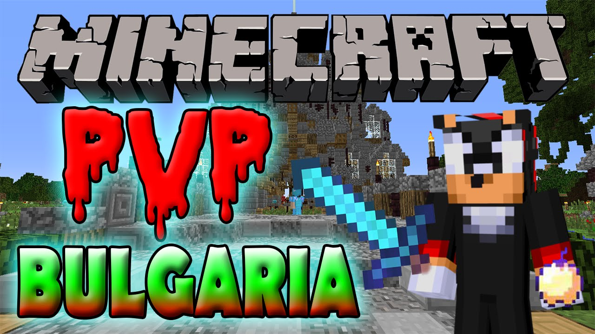
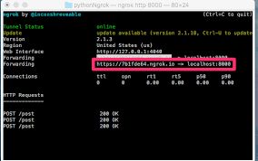

Full Stack Developer
First, solve the problem.
Then, write the code.
Perfection is achieved not when there is nothing more to add, but rather when there is nothing more to take away.
Perfection is achieved not when there is nothing more to add, but rather when there is nothing more to take away.

Java Script

Java

C#

HTML

CSS
It all started when I was 8, I got my first laptop and I was very excited. At first I used the laptop mostly for gaming, mainly minecraft.
And minecraft, when I started my cyber security, there was one server that was very popular and it was also in my native language, it was called PvPBulgaria.

There was a lot of cheating, once me and my friend were talking on skype and my friend clicked
on a link
in minecraft private chat.
His internet suddenly stopped, he came back online after 5 minutes and this is how I learned
about ddosing and how I can protect myself from it.
That's pretty much how I learned how I can ddos someone, what I need, what tools I need to use, the
attack methods and of course how I need to protect myself with a vpn and some firewall settings.
Now that I know how to attack someone or something, I also need to learn how to defend it, I
started hosting minecraft servers and the first thing that came to my mind was, how do I publish the
server online?

I saw videos that people host it on their own computers, but it's very dangerous and you have to modify your router, so I said no, and then I found this ngrok tool, which wasn't very popular at the time, and I published the server with it!
Now I realized I have to keep the computer on so that means I still host the server on my
computer and
I didn't want to pay for a host so that why I gave up but I still had a lot of experience with minecraft
servers like plugins etc.
I even ran a kinda successful minecraft server back in the day, about 30/40 people playing a
day. But I had to shut down my computer every night.
So, how I said I gave up, but I gained so much experience about hosting and creating
protections.
Alright so everything seemed normal.In 2017 when they released fortnite i really wanted a gaming
pc
so i could play it.
And finally after a few months I got a gaming PC! I remember
it was season 5 and I was playing all day.
So one day I searched on youtube how can I get free fortnite skins and back in the days youtube
didn't really protect the videos for cracking or any illegal stuff like in 2022/2023.
I watched the tutorial it was pretty simple just public combo leech and epic games account
checker I followed the tutorial and just cracked my first account even remembered it had 2 skins!
If you're wondering why I'm telling you what illegal things I did, firstly I was very
young, 13, and
secondly, there's no actual proof maybe im just lying.
Anyway I started looking for private methods and found one very HQ method, there was one leecher
named
smart pastebin leecher, I know what you think leechers are public but this one wasn't!
I started getting so many hits, I had so many accounts I went crazy, I even started selling at
school.
Then I was like lets check the accounts for other hits like minecraft,steam,origin and so on ..
I found a lot of interesting multi checkers, not only but also brute force ones.
I got very addicted, I started learning how to do hq combos using sqli, I'll keep that part
a secret,
anyway after that I started learning about hq proxies, but I realized I either have to buy them or find
them very nice method where i can scrape them from the website so it was quite unsuccessful.
Well, enough about the cracking part, I have gained a lot of experience, not only how hackers
can crack your password, but also how you can protect yourself, I also didn't mention the checkers and
apis..
So of course over the years I got a lot of viruses from the tools I used, so I learned about
vms, vps, sandboxie, etc. I learned how I can remove malwares, backdoors, rats, etc.
Overall I learned so much, of course this is just a short story of how it all started, I didn't include much.
It all started with basic html when I was about 10/11 years old.

Honestly I couldn't do anything myself so I just copied code from youtube and was very
proud lol and
always coded in notepad.
I didn't know what ide was or even css, I just used notepad and plain html.
So if you've read my cyber security journey you know I've been hacking accounts so one day I
decided to start a Discord group and website and I did.
It was actually quite successful, I was doing giveaways, I even had an account generator,
but the
website was very bad, how did I say I only knew pure html so it was trash.
I later removed the discord group and gave up making websites because it was too hard.
Years later a friend of mine said I was some kind of hacker because I was able to build websites
and that gave me motivation so I started again!
This time I learned about css and started creating html/css projects oh and this time I
used actual ide
- visual studio code.
Everything was great until I realized that I needed to manage my website to look good on every
screen too. It was very difficult and I gave up again..
A year later I came back, learned a lot of properties in css, learned how to position things,
learned about containers and learned how to make responsive websites!

I have created several websites but then something was missing? Yes Java Script.
Actually the java script was very easy to learn so it was a success, now that I know html, css
and the front end java script it was time to learn the back end.

I really struggled with learning the back end but finally after a few months I did that too, learned how to communicate with servers/apis, learned how to host ones and of course node js!
I'm a full stack developer now and I'm only 17 so I still have a lot to learn, of course this isn't the full story of my coding journey, maybe I'll update it and include my java and c++ coding journey too.
I will only include one of my major projects here, if you are curious about my entire
project journey,
contact me here.
We are starting with Impbase.
Impbase was a powerful leak application, it could get any leaked information from discord groups, chats,
dark engines, normal engines ... pretty much anything, the project was shut down due to illegal terms.
My second project Thenix.
Well coding isn't just my main thing I'm 17 and 88kg calisthenics athlete you can see me on
instagram
anyway the website was about affiliate marketing and my paid training plans.
My next project The
River.
A simple private room to chat with strangers, the chat app is recreated from the movie
Unfriended.
My fourth project FastKeyWriter.
I was inspired by the 10fastfingers website and just recreated my own version.
The project is unfinished, so I will work on it in the future, you can still visit it.
My fifth project My Old
Portfolio.
It wasn't good so I updated it, you can still visit my old one.
Of course, I have more projects, but I don't want to put them here yet, I will work more.
Project #6
Online IDE - Better Ide


Email: tekinabin@gmail.com
Discord: 29120120132
Instagram: denis8.sw